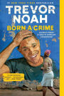

About Born A Crime

Born a Crime: Stories from a South African Childhood is an autobiographical comedy book written by the South African comedian Trevor Noah.
See==>
About Author
The book details Trevor Noah growing up in post-apartheid South Africa. As the light-skinned son of a white father and a black mother, Noah was classified as a "coloured" in the apartheid system of racial classification. Noah stated that even under apartheid he felt trouble fitting in, because it was a crime "for [him] to be born as a mixed-race baby", hence the title of his book.
About Home Going by Yaa Gyasi
Homegoing is the debut historical fiction novel by Yaa Gyasi, published in 2016. Each chapter in the novel follows a different descendant of an Asante woman named Maame, starting with her two sisters, separated by circumstance: Effia marries James Collins, the British governor in charge of Cape Coast Castle, while her half-sister Esi is held captive in the dungeons below. Subsequent chapters follow their children and following generations.
see==>
About Author